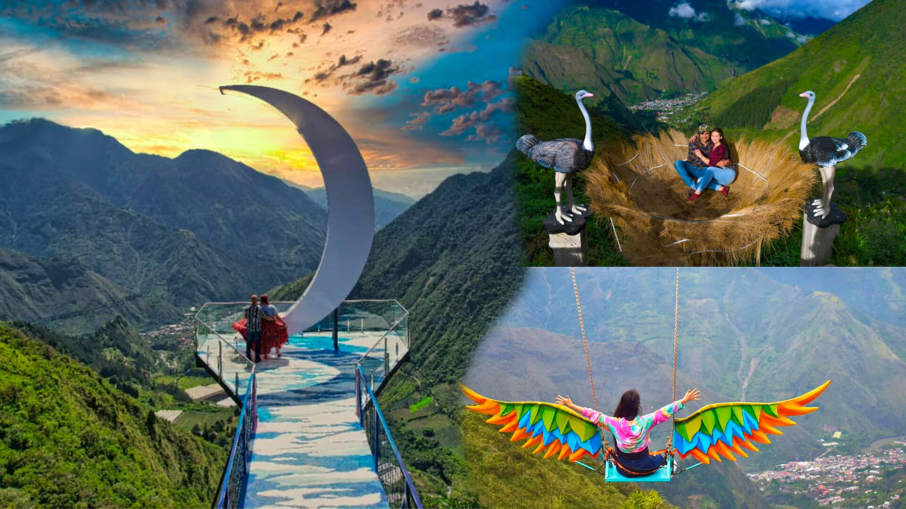
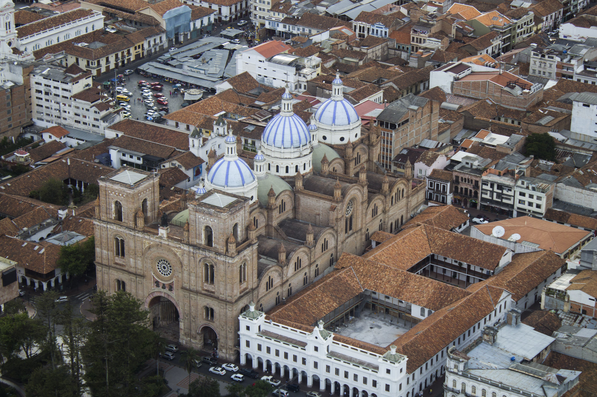
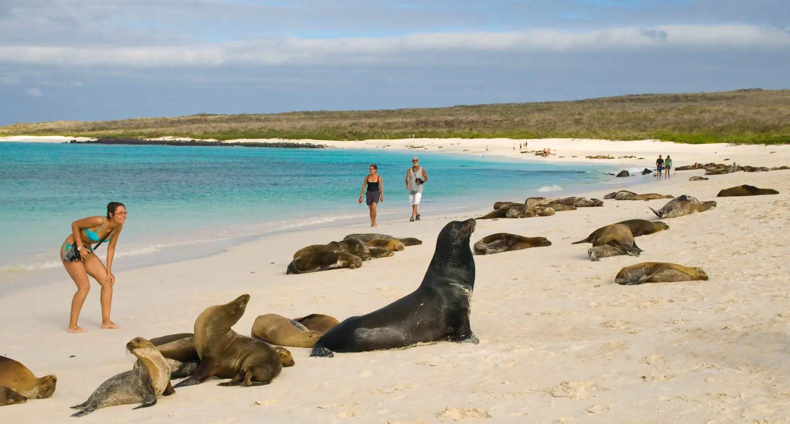
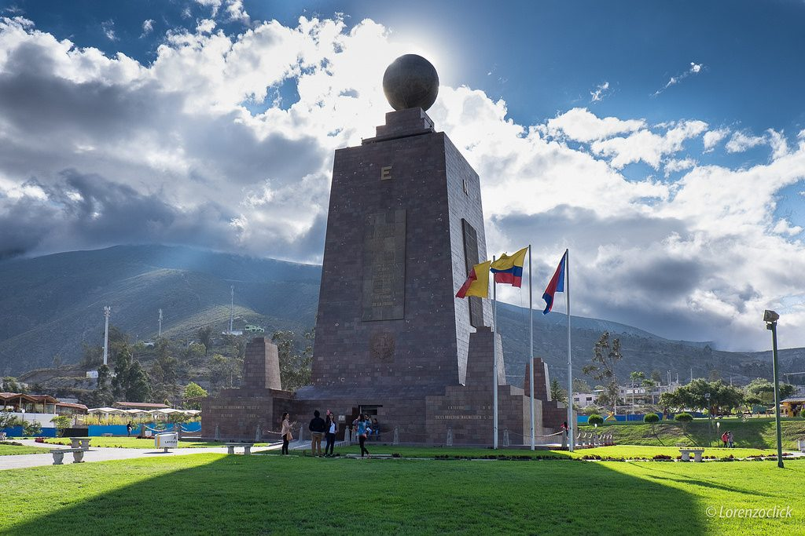
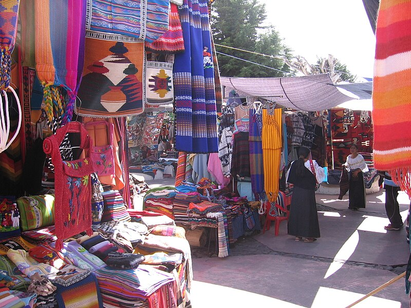
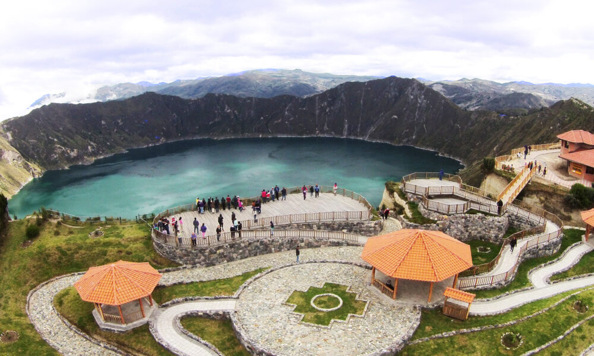
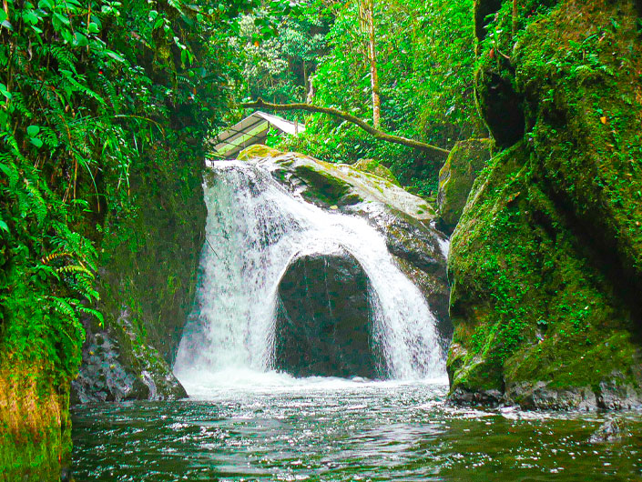
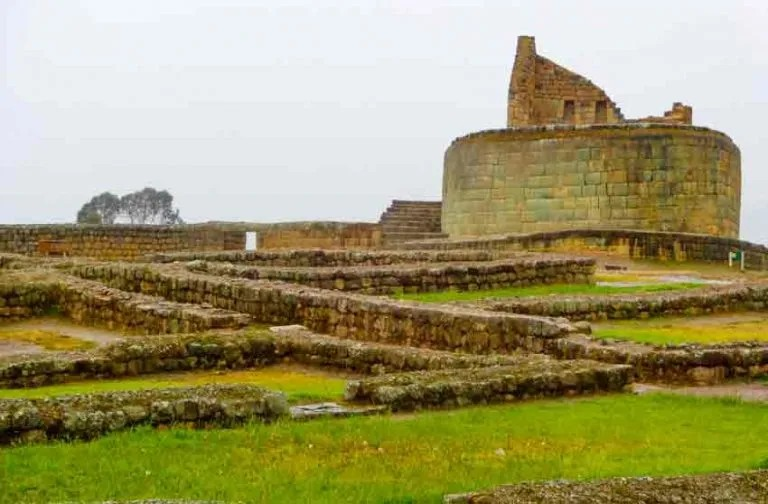

Baños
Ubicado en la provincia de Tungurahua, es uno de los destinos turísticos más hermosos y visitados del Ecuador. En este mágico lugar los turistas pueden contemplar a la majestuosa naturaleza y disfrutar de la adrenalina al practicar actividades de aventura. Esta combinación le da un toque perfecto a este destino y lo convierte en un lugar ideal para disfrutar del tiempo libre. Uno de los sitios turísticos más bellos en Baños de Agua Santa es el Pailón del Diablo, posee una de las cascadas más grandes y famosas del Ecuador tiene aproximadamente 100 metros de altura y tres saltos de agua que, por la fuerza con la que caen, forman un impresionante remolino.

Cuenca
Oficialmente Santa Ana de los Ríos de Cuenca. Se encuentra atravesada por los ríos Tomebamba, Tarqui, Yanuncay y Machángara, al centro-sur de la región interandina del Ecuador, en la hoya del río Paute, a una altitud de 2550 metros sobre el nivel del mar y con un clima templado andino de 16,3 °C en promedio. Es llamada Atenas de Ecuador por su arquitectura, su diversidad cultural, su aporte a las artes, ciencias y letras ecuatorianas, y por ser el lugar de nacimiento de muchos personajes ilustres de la sociedad ecuatoriana

Islas Galápagos
Constituyen un archipiélago del océano Pacífico ubicado a 972 km de la costa de Ecuador. Está conformado por 13 islas grandes con una superficie mayor a 10 km², 6 islas medianas con una superficie de 1 km² a 10 km² y otros 215 islotes de tamaño pequeño además de promontorios rocosos de pocos metros cuadrados distribuidas alrededor de la línea del ecuador terrestre. Son llamadas Las Islas Encantadas, denominación que se ganó el archipiélago en el siglo XVI por su grandiosa biodiversidad de flora y fauna, heredando el nombre por generaciones. Las islas también son hábitat de especies como tortugas marinas, iguanas, lagartos, cormoranes, albatros, leones marinos y pingüinos.

Quito
La Ciudad Mitad del Mundo es un complejo turístico y cultural, propiedad de la prefectura de la provincia de Pichincha. Está situado en la parroquia de San Antonio del Distrito Metropolitano de Quito, al norte de la ciudad de Quito.
La principal atracción del lugar es el monumento a la Mitad del Mundo, que tiene como finalidad resaltar la ubicación exacta de la línea ecuatorial, de la cual el país toma su nombre, cabe destacar la misión geodésica franco-española del siglo XVIII que ubicó el sitio aproximado por el cual pasa la línea equinoccial.

Otavalo
La Plaza de los Ponchos, también conocida como Mercado Centenario, es el escenario de la mayor feria artesanal del norte del Ecuador. Ubicado en la provincia de Imbabura en la localidad de Otavalo. La actividad de la Plaza de Ponchos Ecuador está destinada a comercializar artículos artesanales, tanto a nivel local, regional, nacional e inclusive internacional. Los textiles de Otavalo son su bandera de producción artesanal, sin embargo, también se ofrece otro tipo de productos realizados en madera, obras de arte con cerámica, madera, pintura, metal etc.

Quilotoa - Latacunga
Es un volcán de la Cordillera de los Andes del Ecuador. El volcán Quilotoa se distingue por el majestuoso lago natural formado en su cráter conocido como la Laguna del Quilotoa. El atractivo color azul y turquesa de las aguas de está laguna volcánica se debe a su composición de gas carbónico, hidrógeno sulfuroso y otros minerales que se manifiestan con mayor intensidad al resplandor del sol. Se estima que la última erupción del volcán Quilotoa ocurrió aproximadamente hace 800 años.

Mindo - Pichincha
Es un destino conocido por ser un paraíso natural de innumerables atractivos, que ofrece una gran variedad de opciones para los amantes de la naturaleza y las aventuras al aire libre. En Mindo podrás explorar cascadas, observar un sinnúmero de especies de aves, mariposas y orquídeas; practicar deportes extremos, como: tubing, canopy o barranquismo; o, simplemente, podrás disfrutar de la tranquilidad pues es un lugar perfecto para relajarse, respirar aire puro y conectarse con la naturaleza

Ingapirco - Azogues
Es el lugar sagrado de la ocupación Inca en el Ecuador. Es considerado como el sitio arqueológico precolombino más importante del país y el conjunto arquitectónico inca mejor conservado del Ecuador.